8 SS8 Results
| Pos | Car | Code | Time (s) | Gap | Diff |
|---|---|---|---|---|---|
| 1 | 69 | ROV | 1235.9 | 0.0 | 0.0 |
| 2 | 8 | TÄN | 1243.4 | 7.5 | 7.5 |
| 3 | 1 | OGI | 1249.8 | 13.9 | 6.4 |
| 4 | 33 | EVA | 1253.1 | 17.2 | 3.3 |
| 5 | 6 | SOR | 1253.8 | 17.9 | 0.7 |
| 6 | 44 | GRE | 1260.8 | 24.9 | 7.0 |
| 7 | 16 | FOU | 1267.5 | 31.6 | 0.7 |
| 8 | 11 | NEU | 1268.5 | 32.6 | 0.4 |
| 9 | 7 | LOU | 1292.1 | 56.2 | 0.8 |
8.1 Stage SS8 Splits Analysis
Reports on splits
8.1.1 Split Locations
Length of each split section in km:
| full_split_distances | stage_dist | |
|---|---|---|
| split_1 | 2.62 | 2.62 |
| split_2 | 7.09 | 9.71 |
| split_3 | 5.21 | 14.92 |
| split_4 | 3.71 | 18.63 |
| split_5 | 4.38 | 23.01 |
| split_N | 1.80 | 24.81 |
8.1.2 Stage Split Times & Result
Summary of stage split times and overall stage result:
| code | split_1 | split_2 | split_3 | split_4 | split_5 | split_N | diffFirstS | position |
|---|---|---|---|---|---|---|---|---|
| ROV | 125.5 | 465.5 | 753.4 | 960.3 | 1188.2 | 1235.9 | 0.0 | 1 |
| TÄN | 125.3 | 466.0 | 758.7 | 967.5 | 1195.9 | 1243.4 | 7.5 | 2 |
| OGI | 128.3 | 473.4 | 764.3 | 973.3 | 1202.2 | 1249.8 | 13.9 | 3 |
| EVA | 125.8 | 465.1 | 758.8 | 971.6 | 1205.2 | 1253.1 | 17.2 | 4 |
| SOR | 125.3 | 466.1 | 761.7 | 972.9 | 1205.2 | 1253.8 | 17.9 | 5 |
| GRE | 128.9 | 471.7 | 766.4 | 979.1 | 1211.7 | 1260.8 | 24.9 | 6 |
| FOU | 126.8 | 467.8 | 760.5 | 970.9 | 1219.6 | 1267.5 | 31.6 | 8 |
| NEU | 127.3 | 468.9 | 768.0 | 984.6 | 1219.8 | 1268.5 | 32.6 | 10 |
| LOU | 130.8 | 476.1 | 780.7 | 1000.0 | 1242.8 | 1292.1 | 56.2 | 17 |
8.1.3 Split Time Rankings
Rank of each split time:
| code | split_1 | split_2 | split_3 | split_4 | split_5 | split_N |
|---|---|---|---|---|---|---|
| ROV | 2 | 2 | 1 | 1 | 1 | 1 |
| TÄN | 1 | 3 | 2 | 2 | 2 | 2 |
| OGI | 6 | 8 | 6 | 6 | 3 | 3 |
| EVA | 3 | 1 | 3 | 4 | 4 | 4 |
| SOR | 1 | 4 | 5 | 5 | 4 | 5 |
| GRE | 7 | 7 | 7 | 7 | 5 | 6 |
| FOU | 4 | 5 | 4 | 3 | 6 | 7 |
| NEU | 5 | 6 | 8 | 8 | 7 | 8 |
| LOU | 8 | 9 | 9 | 9 | 8 | 9 |
Rank on each split section:
| code | split_1 | split_2 | split_3 | split_4 | split_5 | split_N |
|---|---|---|---|---|---|---|
| ROV | 2 | 2 | 1 | 1 | 1 | 3 |
| TÄN | 1 | 3 | 4 | 2 | 2 | 1 |
| OGI | 6 | 8 | 2 | 3 | 3 | 2 |
| EVA | 3 | 1 | 5 | 7 | 6 | 4 |
| SOR | 1 | 4 | 7 | 5 | 4 | 6 |
| GRE | 7 | 7 | 6 | 6 | 5 | 8 |
| FOU | 4 | 5 | 3 | 4 | 9 | 5 |
| NEU | 5 | 6 | 8 | 8 | 7 | 7 |
| LOU | 8 | 9 | 9 | 9 | 8 | 9 |
8.1.4 Split Section Pace
Pace is measured in seconds per kilometer, which is to say, how long it takes to complete each kilometer (lower is better):
| code | split_1 | split_2 | split_3 | split_4 | split_5 | split_N |
|---|---|---|---|---|---|---|
| ROV | 47.90 | 47.95 | 55.26 | 55.77 | 52.03 | 26.50 |
| TÄN | 47.82 | 48.05 | 56.18 | 56.28 | 52.15 | 26.39 |
| OGI | 48.97 | 48.67 | 55.83 | 56.33 | 52.26 | 26.44 |
| EVA | 48.02 | 47.86 | 56.37 | 57.36 | 53.33 | 26.61 |
| SOR | 47.82 | 48.07 | 56.74 | 56.93 | 53.04 | 27.00 |
| GRE | 49.20 | 48.35 | 56.56 | 57.33 | 53.11 | 27.28 |
| FOU | 48.40 | 48.10 | 56.18 | 56.71 | 56.78 | 26.61 |
| NEU | 48.59 | 48.18 | 57.41 | 58.38 | 53.70 | 27.06 |
| LOU | 49.92 | 48.70 | 58.46 | 59.11 | 55.43 | 27.39 |
8.1.5 Pace Chart
Pace relative to the stage winner.
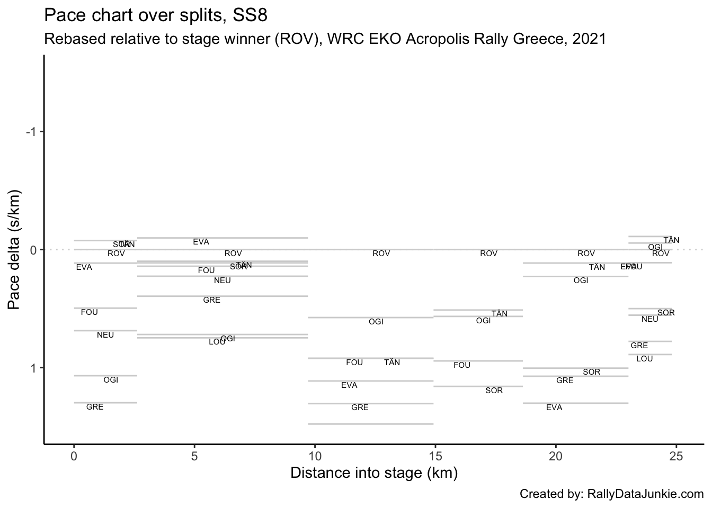
8.1.6 Ultimate Stage Comparisons
Split time comparisons relative to various ultimate stage time calculations.
These views provide various ways of comparing the performance of each driver to various ghost drivers:
- best recorded split time at each split (ultimate actuals): gives an estimate of how well the driver’s split times compare with each first ranked split time (time into stage at each split);
- fastest time going from one split to the next (ultimate sections): gives an estimate of how quickly each driver completed each split section relative to the quickest time recorded completing that split section (time taken to go from one split point to the next);
- accumulated ultimate sections times: gives and estimate of how quickly the driver is going relative to the fastest possible completion of the stage based on accumulated ultimate split section times.
8.1.6.1 Ultimate Actuals
Driver times compared to the first ranked recorded split time at each split:
| code | split_1 | split_2 | split_3 | split_4 | split_5 | split_N |
|---|---|---|---|---|---|---|
| ROV | 0.2 | 0.4 | 0.0 | 0.0 | 0.0 | 0.0 |
| TÄN | 0.0 | 0.9 | 5.3 | 7.2 | 7.7 | 7.5 |
| OGI | 3.0 | 8.3 | 10.9 | 13.0 | 14.0 | 13.9 |
| EVA | 0.5 | 0.0 | 5.4 | 11.3 | 17.0 | 17.2 |
| SOR | 0.0 | 1.0 | 8.3 | 12.6 | 17.0 | 17.9 |
| GRE | 3.6 | 6.6 | 13.0 | 18.8 | 23.5 | 24.9 |
| FOU | 1.5 | 2.7 | 7.1 | 10.6 | 31.4 | 31.6 |
| NEU | 2.0 | 3.8 | 14.6 | 24.3 | 31.6 | 32.6 |
| LOU | 5.5 | 11.0 | 27.3 | 39.7 | 54.6 | 56.2 |
| ultimate | 0.0 | 0.0 | 0.0 | 0.0 | 0.0 | 0.0 |
8.1.6.2 Ultimate Sections
Split durations rebased relative to the fastest transit of each split section:
| code | split_1 | split_2 | split_3 | split_4 | split_5 | split_N |
|---|---|---|---|---|---|---|
| ROV | 0.2 | 0.7 | 0.0 | 0.0 | 0.0 | 0.2 |
| TÄN | 0.0 | 1.4 | 4.8 | 1.9 | 0.5 | 0.0 |
| OGI | 3.0 | 5.8 | 3.0 | 2.1 | 1.0 | 0.1 |
| EVA | 0.5 | 0.0 | 5.8 | 5.9 | 5.7 | 0.4 |
| SOR | 0.0 | 1.5 | 7.7 | 4.3 | 4.4 | 1.1 |
| GRE | 3.6 | 3.5 | 6.8 | 5.8 | 4.7 | 1.6 |
| FOU | 1.5 | 1.7 | 4.8 | 3.5 | 20.8 | 0.4 |
| NEU | 2.0 | 2.3 | 11.2 | 9.7 | 7.3 | 1.2 |
| LOU | 5.5 | 6.0 | 16.7 | 12.4 | 14.9 | 1.8 |
| ultimate | 0.0 | 0.0 | 0.0 | 0.0 | 0.0 | 0.0 |
8.1.6.3 Ultimate Accumulated Sections
Actual split times relative to the accumulated ultimate split section times:
| code | split_1 | split_2 | split_3 | split_4 | split_5 | split_N |
|---|---|---|---|---|---|---|
| ROV | 0.2 | 0.9 | 0.9 | 0.9 | 0.9 | 1.1 |
| TÄN | 0.0 | 1.4 | 6.2 | 8.1 | 8.6 | 8.6 |
| OGI | 3.0 | 8.8 | 11.8 | 13.9 | 14.9 | 15.0 |
| EVA | 0.5 | 0.5 | 6.3 | 12.2 | 17.9 | 18.3 |
| SOR | 0.0 | 1.5 | 9.2 | 13.5 | 17.9 | 19.0 |
| GRE | 3.6 | 7.1 | 13.9 | 19.7 | 24.4 | 26.0 |
| FOU | 1.5 | 3.2 | 8.0 | 11.5 | 32.3 | 32.7 |
| NEU | 2.0 | 4.3 | 15.5 | 25.2 | 32.5 | 33.7 |
| LOU | 5.5 | 11.5 | 28.2 | 40.6 | 55.5 | 57.3 |
| ultimate | 0.0 | 0.0 | 0.0 | 0.0 | 0.0 | 0.0 |
8.1.7 Split Section Pace Distribution
Distribution of pace values for each split section:
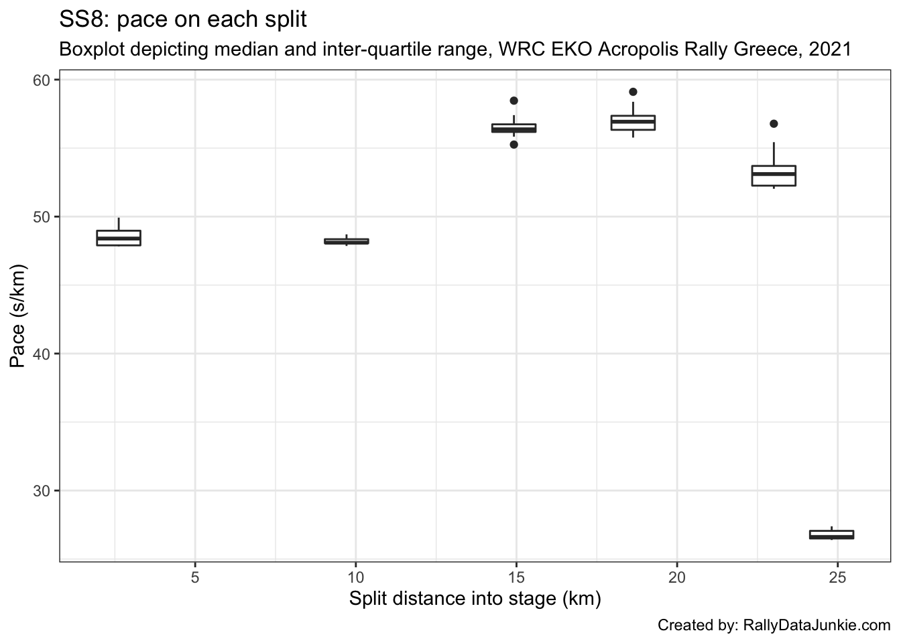
8.2 Text report
| code | identifier | entryId | stage | overall_pos | prev_position | retained_lead | lost_lead | gained_lead | overall_position_delta | overall_chase_code | overall_lead_code | overall_gap | overall_diff | overall_chase | overall_stage_pos | stage_position | stage_win | position | TimeInS | gap | diff | chase | chase_code | lead_code |
|---|---|---|---|---|---|---|---|---|---|---|---|---|---|---|---|---|---|---|---|---|---|---|---|---|
| ROV | 69 | 23550 | SS8 | 1 | 1 | TRUE | FALSE | FALSE | 0 | TÄN | NA | 0.0 | NA | 16.8 | 1 | 1 | TRUE | 1 | 1235.9 | 0.0 | 0.0 | 7.5 | TÄN | NA |
| TÄN | 8 | 23551 | SS8 | 2 | 2 | FALSE | FALSE | FALSE | 0 | OGI | ROV | 16.8 | 16.8 | 13.8 | 2 | 2 | FALSE | 2 | 1243.4 | 7.5 | 7.5 | 6.4 | OGI | ROV |
| OGI | 1 | 23547 | SS8 | 3 | 3 | FALSE | FALSE | FALSE | 0 | SOR | TÄN | 30.6 | 13.8 | 27.6 | 3 | 3 | FALSE | 3 | 1249.8 | 13.9 | 6.4 | 3.3 | EVA | TÄN |
| EVA | 33 | 23548 | SS8 | 7 | 7 | FALSE | FALSE | FALSE | 0 | NEU | GRE | 313.9 | 185.0 | 106.5 | 4 | 4 | FALSE | 4 | 1253.1 | 17.2 | 3.3 | 0.7 | SOR | OGI |
| SOR | 6 | 23554 | SS8 | 4 | 4 | FALSE | FALSE | FALSE | 0 | FOU | OGI | 58.2 | 27.6 | 56.3 | 5 | 5 | FALSE | 5 | 1253.8 | 17.9 | 0.7 | 7.0 | GRE | EVA |
| GRE | 44 | 23553 | SS8 | 6 | 6 | FALSE | FALSE | FALSE | 0 | EVA | FOU | 128.9 | 14.4 | 185.0 | 6 | 6 | FALSE | 6 | 1260.8 | 24.9 | 7.0 | 6.7 | FOU | SOR |
| FOU | 16 | 23555 | SS8 | 5 | 5 | FALSE | FALSE | FALSE | 0 | GRE | SOR | 114.5 | 56.3 | 14.4 | 8 | 7 | FALSE | 7 | 1267.5 | 31.6 | 0.7 | 1.0 | NEU | GRE |
| NEU | 11 | 23549 | SS8 | 8 | 8 | FALSE | FALSE | FALSE | 0 | LOU | EVA | 420.4 | 106.5 | 508.9 | 10 | 8 | FALSE | 8 | 1268.5 | 32.6 | 0.4 | 23.6 | LOU | FOU |
| LOU | 7 | 23556 | SS8 | 9 | 9 | FALSE | FALSE | FALSE | 0 | NA | NEU | 929.3 | 508.9 | NA | 17 | 9 | FALSE | 9 | 1292.1 | 56.2 | 0.8 | NA | NA | NEU |
Stage report for SS8:
ROV took the stage win and retained overall lead of the rally recording a time of 1235.9s.
TÄN took second place on stage, 7.5s behind the stage winner .
OGI took third on stage, 13.9s behind the stage winner .
EVA took fourth on stage, 3.3s behind OGI .
SOR took fifth on stage, with a time of 1253.8s, just 0.7s off EVA.
GRE took sixth on stage, 24.9s behind the stage winner in a time of 1260.8s .
FOU took eighth on stage, with a time of 1267.5s , only 0.7s behind GRE.
NEU took tenth position on stage, 32.6s behind ROV , just 0.4s behind FOU.
LOU took seventeenth on stage, with a time of 1292.1s, just 0.8s off NEU.
8.3 Driver Report, SS8 - OGI
OGI took third on stage, 13.9s behind the stage winner .
Stage report for OGI.
| Pos | Car | Code | Time (s) | Gap | Diff |
|---|---|---|---|---|---|
| 1 | 69 | ROV | -13.9 | -13.9 | 0.0 |
| 2 | 8 | TÄN | -6.4 | -6.4 | 7.5 |
| 3 | 1 | OGI | 0.0 | 0.0 | 6.4 |
| 4 | 33 | EVA | 3.3 | 3.3 | 3.3 |
| 5 | 6 | SOR | 4.0 | 4.0 | 0.7 |
| 6 | 44 | GRE | 11.0 | 11.0 | 7.0 |
| 8 | 16 | FOU | 17.7 | 17.7 | 0.7 |
| 10 | 11 | NEU | 18.7 | 18.7 | 0.4 |
| 17 | 7 | LOU | 42.3 | 42.3 | 0.8 |
8.3.1 Rebased Split Times
OGI’s delta at each split compared to other drivers.
| code | split_1 | split_2 | split_3 | split_4 | split_5 | split_N |
|---|---|---|---|---|---|---|
| ROV | -2.8 | -7.9 | -10.9 | -13.0 | -14.0 | -13.9 |
| TÄN | -3.0 | -7.4 | -5.6 | -5.8 | -6.3 | -6.4 |
| OGI | 0.0 | 0.0 | 0.0 | 0.0 | 0.0 | 0.0 |
| EVA | -2.5 | -8.3 | -5.5 | -1.7 | 3.0 | 3.3 |
| SOR | -3.0 | -7.3 | -2.6 | -0.4 | 3.0 | 4.0 |
| GRE | 0.6 | -1.7 | 2.1 | 5.8 | 9.5 | 11.0 |
| FOU | -1.5 | -5.6 | -3.8 | -2.4 | 17.4 | 17.7 |
| NEU | -1.0 | -4.5 | 3.7 | 11.3 | 17.6 | 18.7 |
| LOU | 2.5 | 2.7 | 16.4 | 26.7 | 40.6 | 42.3 |
8.3.2 Off-the-Pace Chart
Accumulated stage time deltas at each split:
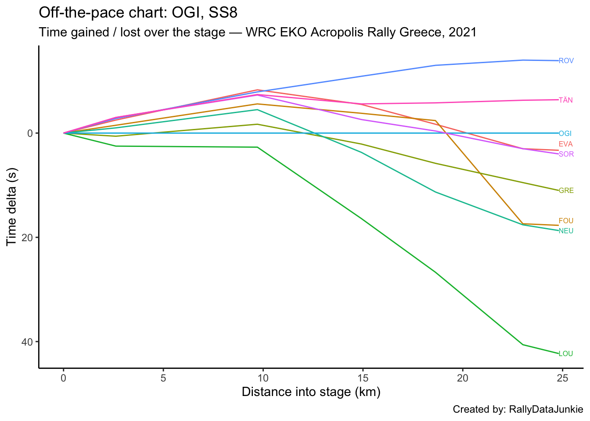
8.3.3 Within-Split Duration Deltas
OGI’s delta in time to complete each split section compared to other drivers:
| code | split_1 | split_2 | split_3 | split_4 | split_5 | split_N |
|---|---|---|---|---|---|---|
| ROV | -2.8 | -5.1 | -3.0 | -2.1 | -1.0 | 0.1 |
| TÄN | -3.0 | -4.4 | 1.8 | -0.2 | -0.5 | -0.1 |
| OGI | 0.0 | 0.0 | 0.0 | 0.0 | 0.0 | 0.0 |
| EVA | -2.5 | -5.8 | 2.8 | 3.8 | 4.7 | 0.3 |
| SOR | -3.0 | -4.3 | 4.7 | 2.2 | 3.4 | 1.0 |
| GRE | 0.6 | -2.3 | 3.8 | 3.7 | 3.7 | 1.5 |
| FOU | -1.5 | -4.1 | 1.8 | 1.4 | 19.8 | 0.3 |
| NEU | -1.0 | -3.5 | 8.2 | 7.6 | 6.3 | 1.1 |
| LOU | 2.5 | 0.2 | 13.7 | 10.3 | 13.9 | 1.7 |
8.3.4 Within-Split Pace Deltas
| code | split_1 | split_2 | split_3 | split_4 | split_5 | split_N |
|---|---|---|---|---|---|---|
| ROV | -1.07 | -0.72 | -0.58 | -0.57 | -0.23 | 0.06 |
| TÄN | -1.15 | -0.62 | 0.35 | -0.05 | -0.11 | -0.06 |
| OGI | 0.00 | 0.00 | 0.00 | 0.00 | 0.00 | 0.00 |
| EVA | -0.95 | -0.82 | 0.54 | 1.02 | 1.07 | 0.17 |
| SOR | -1.15 | -0.61 | 0.90 | 0.59 | 0.78 | 0.56 |
| GRE | 0.23 | -0.32 | 0.73 | 1.00 | 0.84 | 0.83 |
| FOU | -0.57 | -0.58 | 0.35 | 0.38 | 4.52 | 0.17 |
| NEU | -0.38 | -0.49 | 1.57 | 2.05 | 1.44 | 0.61 |
| LOU | 0.95 | 0.03 | 2.63 | 2.78 | 3.17 | 0.94 |
8.3.5 Within-Split Pace Map
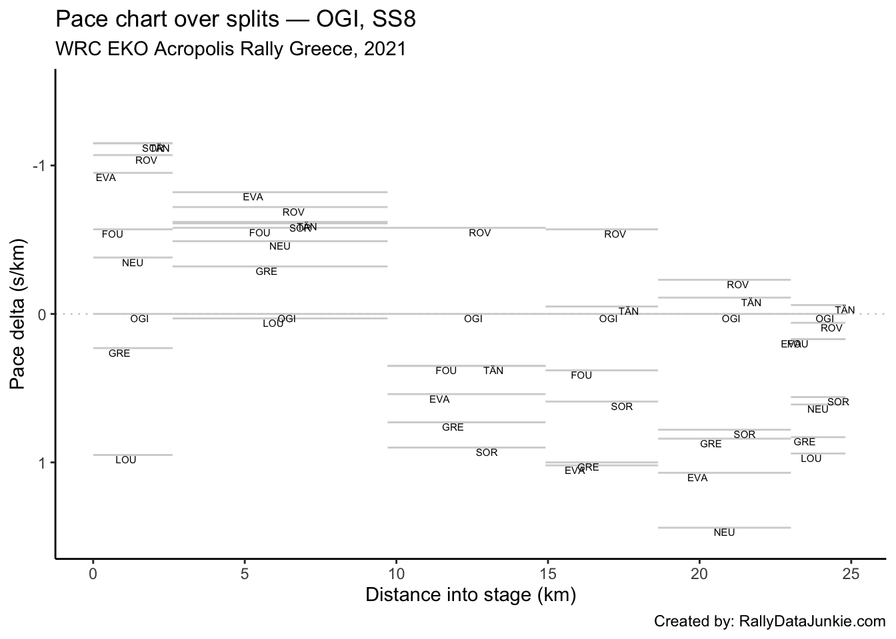
8.4 Driver Report, SS8 - EVA
EVA took fourth on stage, 3.3s behind OGI .
Stage report for EVA.
| Pos | Car | Code | Time (s) | Gap | Diff |
|---|---|---|---|---|---|
| 1 | 69 | ROV | -17.2 | -17.2 | 0.0 |
| 2 | 8 | TÄN | -9.7 | -9.7 | 7.5 |
| 3 | 1 | OGI | -3.3 | -3.3 | 6.4 |
| 4 | 33 | EVA | 0.0 | 0.0 | 3.3 |
| 5 | 6 | SOR | 0.7 | 0.7 | 0.7 |
| 6 | 44 | GRE | 7.7 | 7.7 | 7.0 |
| 8 | 16 | FOU | 14.4 | 14.4 | 0.7 |
| 10 | 11 | NEU | 15.4 | 15.4 | 0.4 |
| 17 | 7 | LOU | 39.0 | 39.0 | 0.8 |
8.4.1 Rebased Split Times
EVA’s delta at each split compared to other drivers.
| code | split_1 | split_2 | split_3 | split_4 | split_5 | split_N |
|---|---|---|---|---|---|---|
| ROV | -0.3 | 0.4 | -5.4 | -11.3 | -17.0 | -17.2 |
| TÄN | -0.5 | 0.9 | -0.1 | -4.1 | -9.3 | -9.7 |
| OGI | 2.5 | 8.3 | 5.5 | 1.7 | -3.0 | -3.3 |
| EVA | 0.0 | 0.0 | 0.0 | 0.0 | 0.0 | 0.0 |
| SOR | -0.5 | 1.0 | 2.9 | 1.3 | 0.0 | 0.7 |
| GRE | 3.1 | 6.6 | 7.6 | 7.5 | 6.5 | 7.7 |
| FOU | 1.0 | 2.7 | 1.7 | -0.7 | 14.4 | 14.4 |
| NEU | 1.5 | 3.8 | 9.2 | 13.0 | 14.6 | 15.4 |
| LOU | 5.0 | 11.0 | 21.9 | 28.4 | 37.6 | 39.0 |
8.4.2 Off-the-Pace Chart
Accumulated stage time deltas at each split:
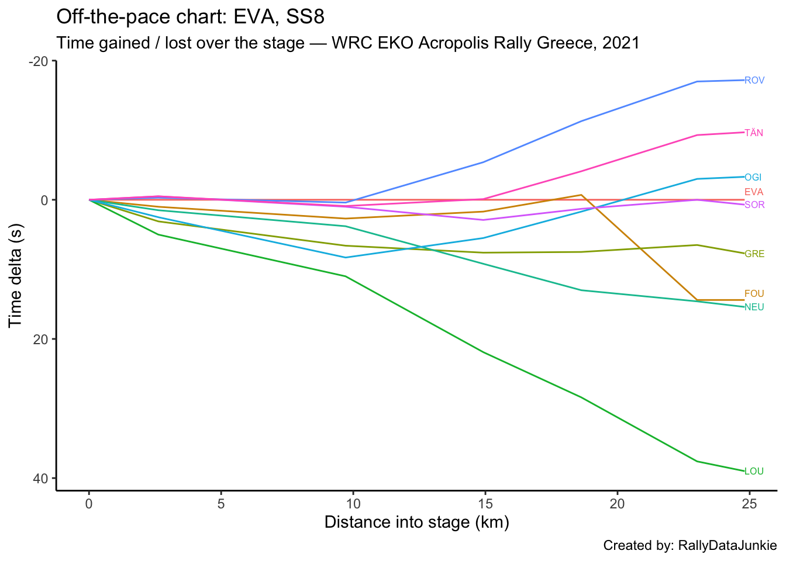
8.4.3 Within-Split Duration Deltas
EVA’s delta in time to complete each split section compared to other drivers:
| code | split_1 | split_2 | split_3 | split_4 | split_5 | split_N |
|---|---|---|---|---|---|---|
| ROV | -0.3 | 0.7 | -5.8 | -5.9 | -5.7 | -0.2 |
| TÄN | -0.5 | 1.4 | -1.0 | -4.0 | -5.2 | -0.4 |
| OGI | 2.5 | 5.8 | -2.8 | -3.8 | -4.7 | -0.3 |
| EVA | 0.0 | 0.0 | 0.0 | 0.0 | 0.0 | 0.0 |
| SOR | -0.5 | 1.5 | 1.9 | -1.6 | -1.3 | 0.7 |
| GRE | 3.1 | 3.5 | 1.0 | -0.1 | -1.0 | 1.2 |
| FOU | 1.0 | 1.7 | -1.0 | -2.4 | 15.1 | 0.0 |
| NEU | 1.5 | 2.3 | 5.4 | 3.8 | 1.6 | 0.8 |
| LOU | 5.0 | 6.0 | 10.9 | 6.5 | 9.2 | 1.4 |
8.4.4 Within-Split Pace Deltas
| code | split_1 | split_2 | split_3 | split_4 | split_5 | split_N |
|---|---|---|---|---|---|---|
| ROV | -0.11 | 0.10 | -1.11 | -1.59 | -1.30 | -0.11 |
| TÄN | -0.19 | 0.20 | -0.19 | -1.08 | -1.19 | -0.22 |
| OGI | 0.95 | 0.82 | -0.54 | -1.02 | -1.07 | -0.17 |
| EVA | 0.00 | 0.00 | 0.00 | 0.00 | 0.00 | 0.00 |
| SOR | -0.19 | 0.21 | 0.36 | -0.43 | -0.30 | 0.39 |
| GRE | 1.18 | 0.49 | 0.19 | -0.03 | -0.23 | 0.67 |
| FOU | 0.38 | 0.24 | -0.19 | -0.65 | 3.45 | 0.00 |
| NEU | 0.57 | 0.32 | 1.04 | 1.02 | 0.37 | 0.44 |
| LOU | 1.91 | 0.85 | 2.09 | 1.75 | 2.10 | 0.78 |
8.4.5 Within-Split Pace Map
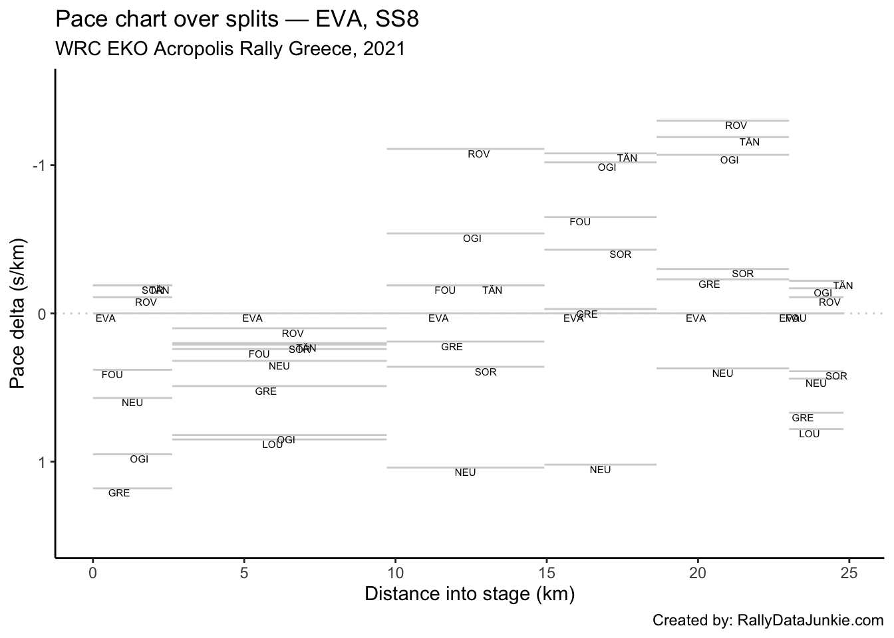
8.5 Driver Report, SS8 - NEU
NEU took tenth position on stage, 32.6s behind ROV , just 0.4s behind FOU.
Stage report for NEU.
| Pos | Car | Code | Time (s) | Gap | Diff |
|---|---|---|---|---|---|
| 1 | 69 | ROV | -32.6 | -32.6 | 0.0 |
| 2 | 8 | TÄN | -25.1 | -25.1 | 7.5 |
| 3 | 1 | OGI | -18.7 | -18.7 | 6.4 |
| 4 | 33 | EVA | -15.4 | -15.4 | 3.3 |
| 5 | 6 | SOR | -14.7 | -14.7 | 0.7 |
| 6 | 44 | GRE | -7.7 | -7.7 | 7.0 |
| 8 | 16 | FOU | -1.0 | -1.0 | 0.7 |
| 10 | 11 | NEU | 0.0 | 0.0 | 0.4 |
| 17 | 7 | LOU | 23.6 | 23.6 | 0.8 |
8.5.1 Rebased Split Times
NEU’s delta at each split compared to other drivers.
| code | split_1 | split_2 | split_3 | split_4 | split_5 | split_N |
|---|---|---|---|---|---|---|
| ROV | -1.8 | -3.4 | -14.6 | -24.3 | -31.6 | -32.6 |
| TÄN | -2.0 | -2.9 | -9.3 | -17.1 | -23.9 | -25.1 |
| OGI | 1.0 | 4.5 | -3.7 | -11.3 | -17.6 | -18.7 |
| EVA | -1.5 | -3.8 | -9.2 | -13.0 | -14.6 | -15.4 |
| SOR | -2.0 | -2.8 | -6.3 | -11.7 | -14.6 | -14.7 |
| GRE | 1.6 | 2.8 | -1.6 | -5.5 | -8.1 | -7.7 |
| FOU | -0.5 | -1.1 | -7.5 | -13.7 | -0.2 | -1.0 |
| NEU | 0.0 | 0.0 | 0.0 | 0.0 | 0.0 | 0.0 |
| LOU | 3.5 | 7.2 | 12.7 | 15.4 | 23.0 | 23.6 |
8.5.2 Off-the-Pace Chart
Accumulated stage time deltas at each split:
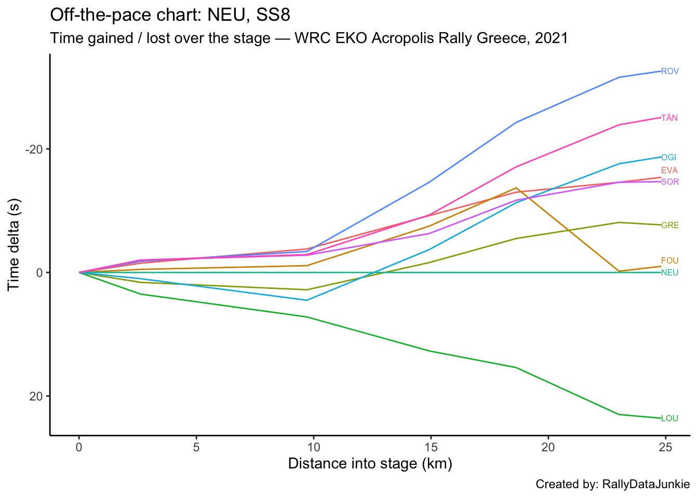
8.5.3 Within-Split Duration Deltas
NEU’s delta in time to complete each split section compared to other drivers:
| code | split_1 | split_2 | split_3 | split_4 | split_5 | split_N |
|---|---|---|---|---|---|---|
| ROV | -1.8 | -1.6 | -11.2 | -9.7 | -7.3 | -1.0 |
| TÄN | -2.0 | -0.9 | -6.4 | -7.8 | -6.8 | -1.2 |
| OGI | 1.0 | 3.5 | -8.2 | -7.6 | -6.3 | -1.1 |
| EVA | -1.5 | -2.3 | -5.4 | -3.8 | -1.6 | -0.8 |
| SOR | -2.0 | -0.8 | -3.5 | -5.4 | -2.9 | -0.1 |
| GRE | 1.6 | 1.2 | -4.4 | -3.9 | -2.6 | 0.4 |
| FOU | -0.5 | -0.6 | -6.4 | -6.2 | 13.5 | -0.8 |
| NEU | 0.0 | 0.0 | 0.0 | 0.0 | 0.0 | 0.0 |
| LOU | 3.5 | 3.7 | 5.5 | 2.7 | 7.6 | 0.6 |
8.5.4 Within-Split Pace Deltas
| code | split_1 | split_2 | split_3 | split_4 | split_5 | split_N |
|---|---|---|---|---|---|---|
| ROV | -0.69 | -0.23 | -2.15 | -2.61 | -1.67 | -0.56 |
| TÄN | -0.76 | -0.13 | -1.23 | -2.10 | -1.55 | -0.67 |
| OGI | 0.38 | 0.49 | -1.57 | -2.05 | -1.44 | -0.61 |
| EVA | -0.57 | -0.32 | -1.04 | -1.02 | -0.37 | -0.44 |
| SOR | -0.76 | -0.11 | -0.67 | -1.46 | -0.66 | -0.06 |
| GRE | 0.61 | 0.17 | -0.84 | -1.05 | -0.59 | 0.22 |
| FOU | -0.19 | -0.08 | -1.23 | -1.67 | 3.08 | -0.44 |
| NEU | 0.00 | 0.00 | 0.00 | 0.00 | 0.00 | 0.00 |
| LOU | 1.34 | 0.52 | 1.06 | 0.73 | 1.74 | 0.33 |
8.5.5 Within-Split Pace Map
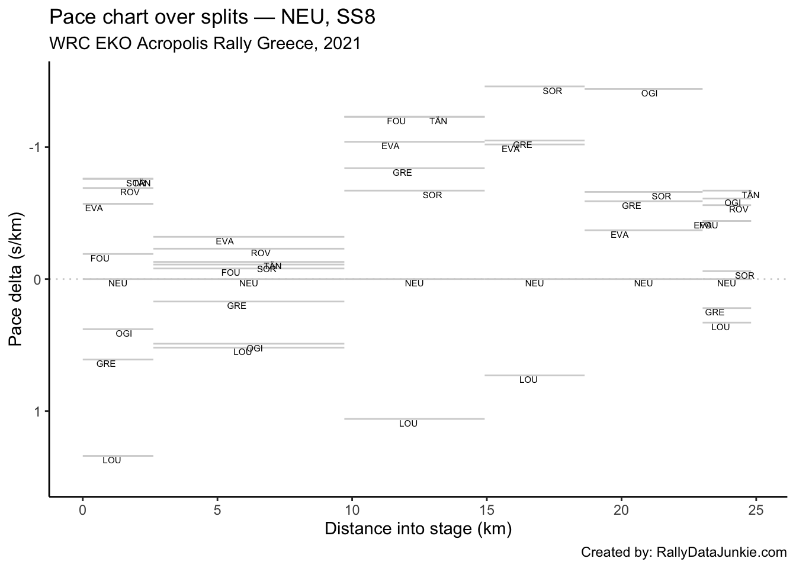
8.6 Driver Report, SS8 - ROV
ROV took the stage win and retained overall lead of the rally recording a time of 1235.9s.
Stage report for ROV.
| Pos | Car | Code | Time (s) | Gap | Diff |
|---|---|---|---|---|---|
| 1 | 69 | ROV | 0.0 | 0.0 | 0.0 |
| 2 | 8 | TÄN | 7.5 | 7.5 | 7.5 |
| 3 | 1 | OGI | 13.9 | 13.9 | 6.4 |
| 4 | 33 | EVA | 17.2 | 17.2 | 3.3 |
| 5 | 6 | SOR | 17.9 | 17.9 | 0.7 |
| 6 | 44 | GRE | 24.9 | 24.9 | 7.0 |
| 8 | 16 | FOU | 31.6 | 31.6 | 0.7 |
| 10 | 11 | NEU | 32.6 | 32.6 | 0.4 |
| 17 | 7 | LOU | 56.2 | 56.2 | 0.8 |
8.6.1 Rebased Split Times
ROV’s delta at each split compared to other drivers.
| code | split_1 | split_2 | split_3 | split_4 | split_5 | split_N |
|---|---|---|---|---|---|---|
| ROV | 0.0 | 0.0 | 0.0 | 0.0 | 0.0 | 0.0 |
| TÄN | -0.2 | 0.5 | 5.3 | 7.2 | 7.7 | 7.5 |
| OGI | 2.8 | 7.9 | 10.9 | 13.0 | 14.0 | 13.9 |
| EVA | 0.3 | -0.4 | 5.4 | 11.3 | 17.0 | 17.2 |
| SOR | -0.2 | 0.6 | 8.3 | 12.6 | 17.0 | 17.9 |
| GRE | 3.4 | 6.2 | 13.0 | 18.8 | 23.5 | 24.9 |
| FOU | 1.3 | 2.3 | 7.1 | 10.6 | 31.4 | 31.6 |
| NEU | 1.8 | 3.4 | 14.6 | 24.3 | 31.6 | 32.6 |
| LOU | 5.3 | 10.6 | 27.3 | 39.7 | 54.6 | 56.2 |
8.6.2 Off-the-Pace Chart
Accumulated stage time deltas at each split:
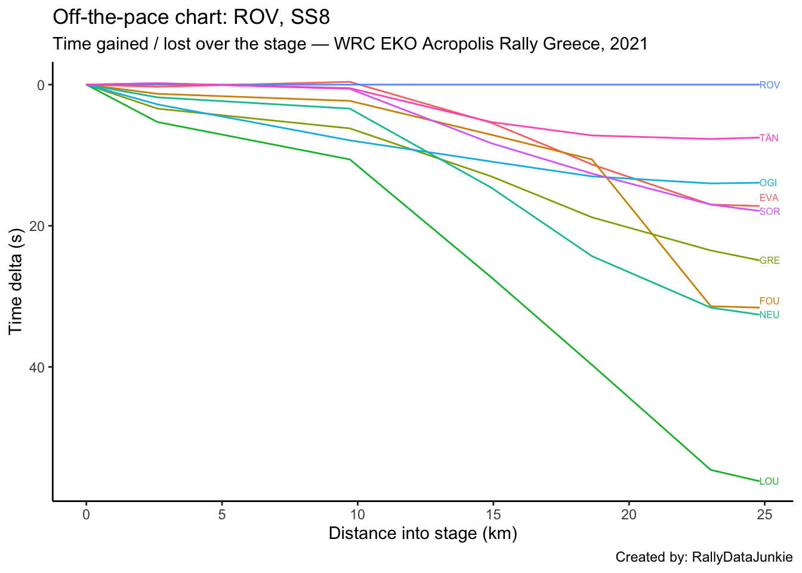
8.6.3 Within-Split Duration Deltas
ROV’s delta in time to complete each split section compared to other drivers:
| code | split_1 | split_2 | split_3 | split_4 | split_5 | split_N |
|---|---|---|---|---|---|---|
| ROV | 0.0 | 0.0 | 0.0 | 0.0 | 0.0 | 0.0 |
| TÄN | -0.2 | 0.7 | 4.8 | 1.9 | 0.5 | -0.2 |
| OGI | 2.8 | 5.1 | 3.0 | 2.1 | 1.0 | -0.1 |
| EVA | 0.3 | -0.7 | 5.8 | 5.9 | 5.7 | 0.2 |
| SOR | -0.2 | 0.8 | 7.7 | 4.3 | 4.4 | 0.9 |
| GRE | 3.4 | 2.8 | 6.8 | 5.8 | 4.7 | 1.4 |
| FOU | 1.3 | 1.0 | 4.8 | 3.5 | 20.8 | 0.2 |
| NEU | 1.8 | 1.6 | 11.2 | 9.7 | 7.3 | 1.0 |
| LOU | 5.3 | 5.3 | 16.7 | 12.4 | 14.9 | 1.6 |
8.6.4 Within-Split Pace Deltas
| code | split_1 | split_2 | split_3 | split_4 | split_5 | split_N |
|---|---|---|---|---|---|---|
| ROV | 0.00 | 0.00 | 0.00 | 0.00 | 0.00 | 0.00 |
| TÄN | -0.08 | 0.10 | 0.92 | 0.51 | 0.11 | -0.11 |
| OGI | 1.07 | 0.72 | 0.58 | 0.57 | 0.23 | -0.06 |
| EVA | 0.11 | -0.10 | 1.11 | 1.59 | 1.30 | 0.11 |
| SOR | -0.08 | 0.11 | 1.48 | 1.16 | 1.00 | 0.50 |
| GRE | 1.30 | 0.39 | 1.31 | 1.56 | 1.07 | 0.78 |
| FOU | 0.50 | 0.14 | 0.92 | 0.94 | 4.75 | 0.11 |
| NEU | 0.69 | 0.23 | 2.15 | 2.61 | 1.67 | 0.56 |
| LOU | 2.02 | 0.75 | 3.21 | 3.34 | 3.40 | 0.89 |
8.6.5 Within-Split Pace Map
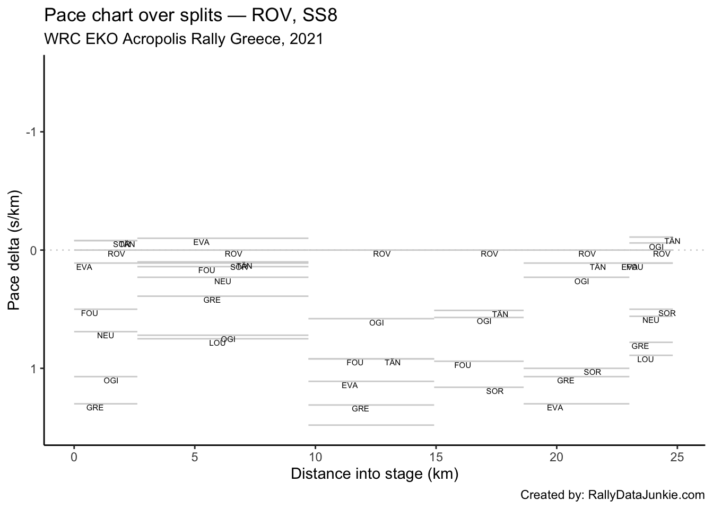
8.7 Driver Report, SS8 - TÄN
TÄN took second place on stage, 7.5s behind the stage winner .
Stage report for TÄN.
| Pos | Car | Code | Time (s) | Gap | Diff |
|---|---|---|---|---|---|
| 1 | 69 | ROV | -7.5 | -7.5 | 0.0 |
| 2 | 8 | TÄN | 0.0 | 0.0 | 7.5 |
| 3 | 1 | OGI | 6.4 | 6.4 | 6.4 |
| 4 | 33 | EVA | 9.7 | 9.7 | 3.3 |
| 5 | 6 | SOR | 10.4 | 10.4 | 0.7 |
| 6 | 44 | GRE | 17.4 | 17.4 | 7.0 |
| 8 | 16 | FOU | 24.1 | 24.1 | 0.7 |
| 10 | 11 | NEU | 25.1 | 25.1 | 0.4 |
| 17 | 7 | LOU | 48.7 | 48.7 | 0.8 |
8.7.1 Rebased Split Times
TÄN’s delta at each split compared to other drivers.
| code | split_1 | split_2 | split_3 | split_4 | split_5 | split_N |
|---|---|---|---|---|---|---|
| ROV | 0.2 | -0.5 | -5.3 | -7.2 | -7.7 | -7.5 |
| TÄN | 0.0 | 0.0 | 0.0 | 0.0 | 0.0 | 0.0 |
| OGI | 3.0 | 7.4 | 5.6 | 5.8 | 6.3 | 6.4 |
| EVA | 0.5 | -0.9 | 0.1 | 4.1 | 9.3 | 9.7 |
| SOR | 0.0 | 0.1 | 3.0 | 5.4 | 9.3 | 10.4 |
| GRE | 3.6 | 5.7 | 7.7 | 11.6 | 15.8 | 17.4 |
| FOU | 1.5 | 1.8 | 1.8 | 3.4 | 23.7 | 24.1 |
| NEU | 2.0 | 2.9 | 9.3 | 17.1 | 23.9 | 25.1 |
| LOU | 5.5 | 10.1 | 22.0 | 32.5 | 46.9 | 48.7 |
8.7.2 Off-the-Pace Chart
Accumulated stage time deltas at each split:
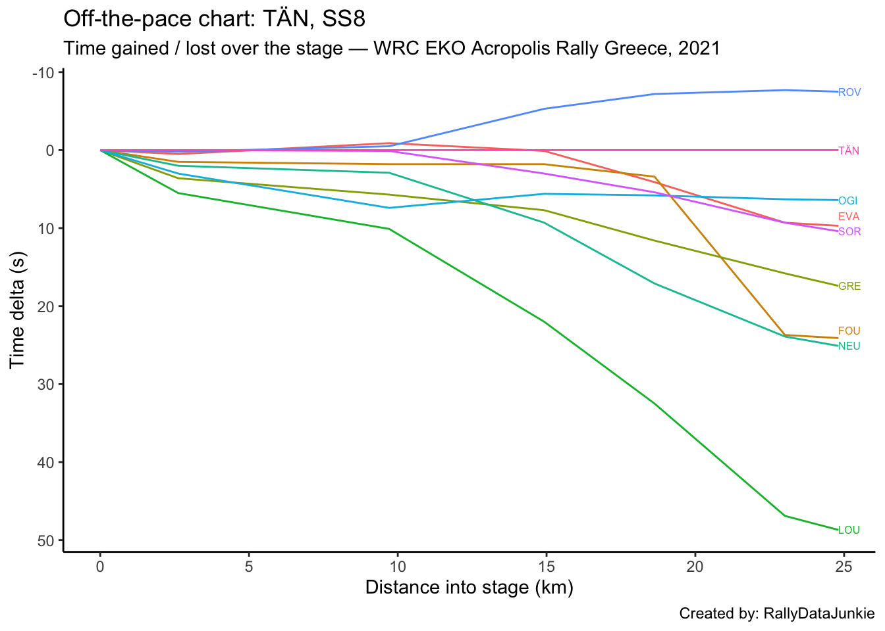
8.7.3 Within-Split Duration Deltas
TÄN’s delta in time to complete each split section compared to other drivers:
| code | split_1 | split_2 | split_3 | split_4 | split_5 | split_N |
|---|---|---|---|---|---|---|
| ROV | 0.2 | -0.7 | -4.8 | -1.9 | -0.5 | 0.2 |
| TÄN | 0.0 | 0.0 | 0.0 | 0.0 | 0.0 | 0.0 |
| OGI | 3.0 | 4.4 | -1.8 | 0.2 | 0.5 | 0.1 |
| EVA | 0.5 | -1.4 | 1.0 | 4.0 | 5.2 | 0.4 |
| SOR | 0.0 | 0.1 | 2.9 | 2.4 | 3.9 | 1.1 |
| GRE | 3.6 | 2.1 | 2.0 | 3.9 | 4.2 | 1.6 |
| FOU | 1.5 | 0.3 | 0.0 | 1.6 | 20.3 | 0.4 |
| NEU | 2.0 | 0.9 | 6.4 | 7.8 | 6.8 | 1.2 |
| LOU | 5.5 | 4.6 | 11.9 | 10.5 | 14.4 | 1.8 |
8.7.4 Within-Split Pace Deltas
| code | split_1 | split_2 | split_3 | split_4 | split_5 | split_N |
|---|---|---|---|---|---|---|
| ROV | 0.08 | -0.10 | -0.92 | -0.51 | -0.11 | 0.11 |
| TÄN | 0.00 | 0.00 | 0.00 | 0.00 | 0.00 | 0.00 |
| OGI | 1.15 | 0.62 | -0.35 | 0.05 | 0.11 | 0.06 |
| EVA | 0.19 | -0.20 | 0.19 | 1.08 | 1.19 | 0.22 |
| SOR | 0.00 | 0.01 | 0.56 | 0.65 | 0.89 | 0.61 |
| GRE | 1.37 | 0.30 | 0.38 | 1.05 | 0.96 | 0.89 |
| FOU | 0.57 | 0.04 | 0.00 | 0.43 | 4.63 | 0.22 |
| NEU | 0.76 | 0.13 | 1.23 | 2.10 | 1.55 | 0.67 |
| LOU | 2.10 | 0.65 | 2.28 | 2.83 | 3.29 | 1.00 |
8.7.5 Within-Split Pace Map
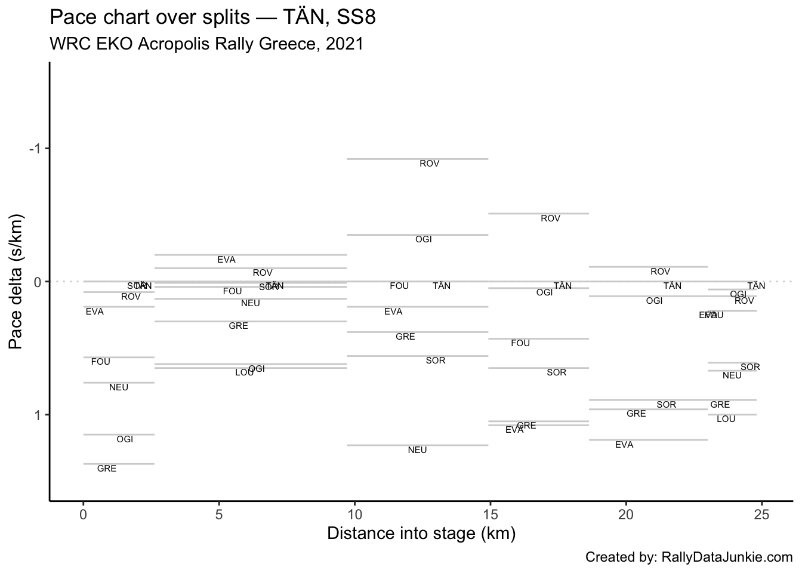
8.8 Driver Report, SS8 - KAT
No stage report for KAT.
8.9 Driver Report, SS8 - GRE
GRE took sixth on stage, 24.9s behind the stage winner in a time of 1260.8s .
Stage report for GRE.
| Pos | Car | Code | Time (s) | Gap | Diff |
|---|---|---|---|---|---|
| 1 | 69 | ROV | -24.9 | -24.9 | 0.0 |
| 2 | 8 | TÄN | -17.4 | -17.4 | 7.5 |
| 3 | 1 | OGI | -11.0 | -11.0 | 6.4 |
| 4 | 33 | EVA | -7.7 | -7.7 | 3.3 |
| 5 | 6 | SOR | -7.0 | -7.0 | 0.7 |
| 6 | 44 | GRE | 0.0 | 0.0 | 7.0 |
| 8 | 16 | FOU | 6.7 | 6.7 | 0.7 |
| 10 | 11 | NEU | 7.7 | 7.7 | 0.4 |
| 17 | 7 | LOU | 31.3 | 31.3 | 0.8 |
8.9.1 Rebased Split Times
GRE’s delta at each split compared to other drivers.
| code | split_1 | split_2 | split_3 | split_4 | split_5 | split_N |
|---|---|---|---|---|---|---|
| ROV | -3.4 | -6.2 | -13.0 | -18.8 | -23.5 | -24.9 |
| TÄN | -3.6 | -5.7 | -7.7 | -11.6 | -15.8 | -17.4 |
| OGI | -0.6 | 1.7 | -2.1 | -5.8 | -9.5 | -11.0 |
| EVA | -3.1 | -6.6 | -7.6 | -7.5 | -6.5 | -7.7 |
| SOR | -3.6 | -5.6 | -4.7 | -6.2 | -6.5 | -7.0 |
| GRE | 0.0 | 0.0 | 0.0 | 0.0 | 0.0 | 0.0 |
| FOU | -2.1 | -3.9 | -5.9 | -8.2 | 7.9 | 6.7 |
| NEU | -1.6 | -2.8 | 1.6 | 5.5 | 8.1 | 7.7 |
| LOU | 1.9 | 4.4 | 14.3 | 20.9 | 31.1 | 31.3 |
8.9.2 Off-the-Pace Chart
Accumulated stage time deltas at each split:
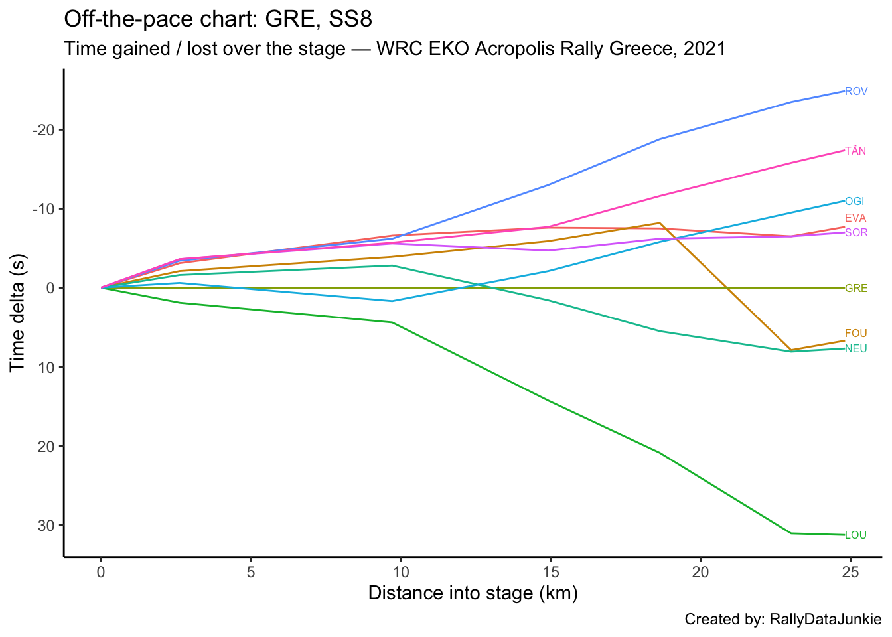
8.9.3 Within-Split Duration Deltas
GRE’s delta in time to complete each split section compared to other drivers:
| code | split_1 | split_2 | split_3 | split_4 | split_5 | split_N |
|---|---|---|---|---|---|---|
| ROV | -3.4 | -2.8 | -6.8 | -5.8 | -4.7 | -1.4 |
| TÄN | -3.6 | -2.1 | -2.0 | -3.9 | -4.2 | -1.6 |
| OGI | -0.6 | 2.3 | -3.8 | -3.7 | -3.7 | -1.5 |
| EVA | -3.1 | -3.5 | -1.0 | 0.1 | 1.0 | -1.2 |
| SOR | -3.6 | -2.0 | 0.9 | -1.5 | -0.3 | -0.5 |
| GRE | 0.0 | 0.0 | 0.0 | 0.0 | 0.0 | 0.0 |
| FOU | -2.1 | -1.8 | -2.0 | -2.3 | 16.1 | -1.2 |
| NEU | -1.6 | -1.2 | 4.4 | 3.9 | 2.6 | -0.4 |
| LOU | 1.9 | 2.5 | 9.9 | 6.6 | 10.2 | 0.2 |
8.9.4 Within-Split Pace Deltas
| code | split_1 | split_2 | split_3 | split_4 | split_5 | split_N |
|---|---|---|---|---|---|---|
| ROV | -1.30 | -0.39 | -1.31 | -1.56 | -1.07 | -0.78 |
| TÄN | -1.37 | -0.30 | -0.38 | -1.05 | -0.96 | -0.89 |
| OGI | -0.23 | 0.32 | -0.73 | -1.00 | -0.84 | -0.83 |
| EVA | -1.18 | -0.49 | -0.19 | 0.03 | 0.23 | -0.67 |
| SOR | -1.37 | -0.28 | 0.17 | -0.40 | -0.07 | -0.28 |
| GRE | 0.00 | 0.00 | 0.00 | 0.00 | 0.00 | 0.00 |
| FOU | -0.80 | -0.25 | -0.38 | -0.62 | 3.68 | -0.67 |
| NEU | -0.61 | -0.17 | 0.84 | 1.05 | 0.59 | -0.22 |
| LOU | 0.73 | 0.35 | 1.90 | 1.78 | 2.33 | 0.11 |
8.9.5 Within-Split Pace Map
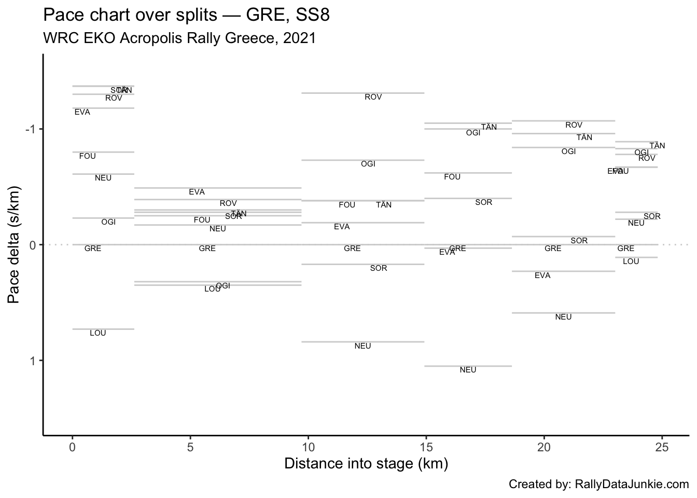
8.10 Driver Report, SS8 - SOR
SOR took fifth on stage, with a time of 1253.8s, just 0.7s off EVA.
Stage report for SOR.
| Pos | Car | Code | Time (s) | Gap | Diff |
|---|---|---|---|---|---|
| 1 | 69 | ROV | -17.9 | -17.9 | 0.0 |
| 2 | 8 | TÄN | -10.4 | -10.4 | 7.5 |
| 3 | 1 | OGI | -4.0 | -4.0 | 6.4 |
| 4 | 33 | EVA | -0.7 | -0.7 | 3.3 |
| 5 | 6 | SOR | 0.0 | 0.0 | 0.7 |
| 6 | 44 | GRE | 7.0 | 7.0 | 7.0 |
| 8 | 16 | FOU | 13.7 | 13.7 | 0.7 |
| 10 | 11 | NEU | 14.7 | 14.7 | 0.4 |
| 17 | 7 | LOU | 38.3 | 38.3 | 0.8 |
8.10.1 Rebased Split Times
SOR’s delta at each split compared to other drivers.
| code | split_1 | split_2 | split_3 | split_4 | split_5 | split_N |
|---|---|---|---|---|---|---|
| ROV | 0.2 | -0.6 | -8.3 | -12.6 | -17.0 | -17.9 |
| TÄN | 0.0 | -0.1 | -3.0 | -5.4 | -9.3 | -10.4 |
| OGI | 3.0 | 7.3 | 2.6 | 0.4 | -3.0 | -4.0 |
| EVA | 0.5 | -1.0 | -2.9 | -1.3 | 0.0 | -0.7 |
| SOR | 0.0 | 0.0 | 0.0 | 0.0 | 0.0 | 0.0 |
| GRE | 3.6 | 5.6 | 4.7 | 6.2 | 6.5 | 7.0 |
| FOU | 1.5 | 1.7 | -1.2 | -2.0 | 14.4 | 13.7 |
| NEU | 2.0 | 2.8 | 6.3 | 11.7 | 14.6 | 14.7 |
| LOU | 5.5 | 10.0 | 19.0 | 27.1 | 37.6 | 38.3 |
8.10.2 Off-the-Pace Chart
Accumulated stage time deltas at each split:
8.10.3 Within-Split Duration Deltas
SOR’s delta in time to complete each split section compared to other drivers:
| code | split_1 | split_2 | split_3 | split_4 | split_5 | split_N |
|---|---|---|---|---|---|---|
| ROV | 0.2 | -0.8 | -7.7 | -4.3 | -4.4 | -0.9 |
| TÄN | 0.0 | -0.1 | -2.9 | -2.4 | -3.9 | -1.1 |
| OGI | 3.0 | 4.3 | -4.7 | -2.2 | -3.4 | -1.0 |
| EVA | 0.5 | -1.5 | -1.9 | 1.6 | 1.3 | -0.7 |
| SOR | 0.0 | 0.0 | 0.0 | 0.0 | 0.0 | 0.0 |
| GRE | 3.6 | 2.0 | -0.9 | 1.5 | 0.3 | 0.5 |
| FOU | 1.5 | 0.2 | -2.9 | -0.8 | 16.4 | -0.7 |
| NEU | 2.0 | 0.8 | 3.5 | 5.4 | 2.9 | 0.1 |
| LOU | 5.5 | 4.5 | 9.0 | 8.1 | 10.5 | 0.7 |
8.10.4 Within-Split Pace Deltas
| code | split_1 | split_2 | split_3 | split_4 | split_5 | split_N |
|---|---|---|---|---|---|---|
| ROV | 0.08 | -0.11 | -1.48 | -1.16 | -1.00 | -0.50 |
| TÄN | 0.00 | -0.01 | -0.56 | -0.65 | -0.89 | -0.61 |
| OGI | 1.15 | 0.61 | -0.90 | -0.59 | -0.78 | -0.56 |
| EVA | 0.19 | -0.21 | -0.36 | 0.43 | 0.30 | -0.39 |
| SOR | 0.00 | 0.00 | 0.00 | 0.00 | 0.00 | 0.00 |
| GRE | 1.37 | 0.28 | -0.17 | 0.40 | 0.07 | 0.28 |
| FOU | 0.57 | 0.03 | -0.56 | -0.22 | 3.74 | -0.39 |
| NEU | 0.76 | 0.11 | 0.67 | 1.46 | 0.66 | 0.06 |
| LOU | 2.10 | 0.63 | 1.73 | 2.18 | 2.40 | 0.39 |
8.10.5 Within-Split Pace Map
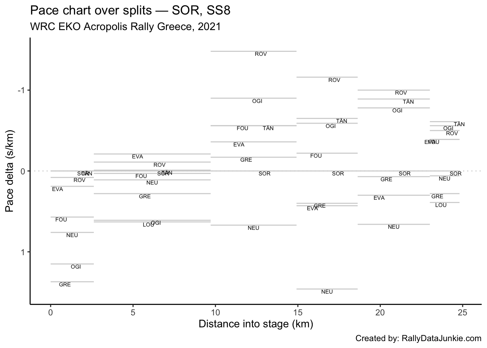
8.11 Driver Report, SS8 - FOU
FOU took eighth on stage, with a time of 1267.5s , only 0.7s behind GRE.
Stage report for FOU.
| Pos | Car | Code | Time (s) | Gap | Diff |
|---|---|---|---|---|---|
| 1 | 69 | ROV | -31.6 | -31.6 | 0.0 |
| 2 | 8 | TÄN | -24.1 | -24.1 | 7.5 |
| 3 | 1 | OGI | -17.7 | -17.7 | 6.4 |
| 4 | 33 | EVA | -14.4 | -14.4 | 3.3 |
| 5 | 6 | SOR | -13.7 | -13.7 | 0.7 |
| 6 | 44 | GRE | -6.7 | -6.7 | 7.0 |
| 8 | 16 | FOU | 0.0 | 0.0 | 0.7 |
| 10 | 11 | NEU | 1.0 | 1.0 | 0.4 |
| 17 | 7 | LOU | 24.6 | 24.6 | 0.8 |
8.11.1 Rebased Split Times
FOU’s delta at each split compared to other drivers.
| code | split_1 | split_2 | split_3 | split_4 | split_5 | split_N |
|---|---|---|---|---|---|---|
| ROV | -1.3 | -2.3 | -7.1 | -10.6 | -31.4 | -31.6 |
| TÄN | -1.5 | -1.8 | -1.8 | -3.4 | -23.7 | -24.1 |
| OGI | 1.5 | 5.6 | 3.8 | 2.4 | -17.4 | -17.7 |
| EVA | -1.0 | -2.7 | -1.7 | 0.7 | -14.4 | -14.4 |
| SOR | -1.5 | -1.7 | 1.2 | 2.0 | -14.4 | -13.7 |
| GRE | 2.1 | 3.9 | 5.9 | 8.2 | -7.9 | -6.7 |
| FOU | 0.0 | 0.0 | 0.0 | 0.0 | 0.0 | 0.0 |
| NEU | 0.5 | 1.1 | 7.5 | 13.7 | 0.2 | 1.0 |
| LOU | 4.0 | 8.3 | 20.2 | 29.1 | 23.2 | 24.6 |
8.11.2 Off-the-Pace Chart
Accumulated stage time deltas at each split:
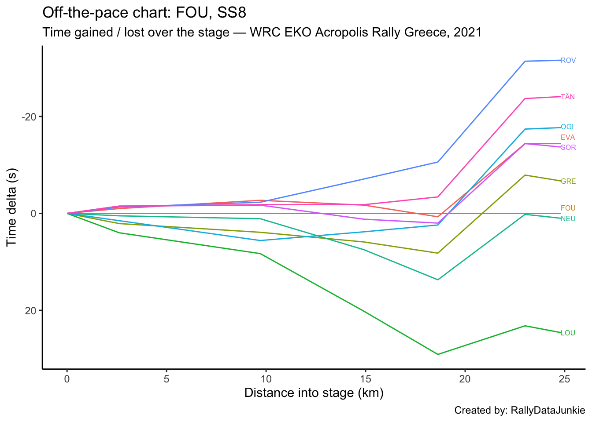
8.11.3 Within-Split Duration Deltas
FOU’s delta in time to complete each split section compared to other drivers:
| code | split_1 | split_2 | split_3 | split_4 | split_5 | split_N |
|---|---|---|---|---|---|---|
| ROV | -1.3 | -1.0 | -4.8 | -3.5 | -20.8 | -0.2 |
| TÄN | -1.5 | -0.3 | 0.0 | -1.6 | -20.3 | -0.4 |
| OGI | 1.5 | 4.1 | -1.8 | -1.4 | -19.8 | -0.3 |
| EVA | -1.0 | -1.7 | 1.0 | 2.4 | -15.1 | 0.0 |
| SOR | -1.5 | -0.2 | 2.9 | 0.8 | -16.4 | 0.7 |
| GRE | 2.1 | 1.8 | 2.0 | 2.3 | -16.1 | 1.2 |
| FOU | 0.0 | 0.0 | 0.0 | 0.0 | 0.0 | 0.0 |
| NEU | 0.5 | 0.6 | 6.4 | 6.2 | -13.5 | 0.8 |
| LOU | 4.0 | 4.3 | 11.9 | 8.9 | -5.9 | 1.4 |
8.11.4 Within-Split Pace Deltas
| code | split_1 | split_2 | split_3 | split_4 | split_5 | split_N |
|---|---|---|---|---|---|---|
| ROV | -0.50 | -0.14 | -0.92 | -0.94 | -4.75 | -0.11 |
| TÄN | -0.57 | -0.04 | 0.00 | -0.43 | -4.63 | -0.22 |
| OGI | 0.57 | 0.58 | -0.35 | -0.38 | -4.52 | -0.17 |
| EVA | -0.38 | -0.24 | 0.19 | 0.65 | -3.45 | 0.00 |
| SOR | -0.57 | -0.03 | 0.56 | 0.22 | -3.74 | 0.39 |
| GRE | 0.80 | 0.25 | 0.38 | 0.62 | -3.68 | 0.67 |
| FOU | 0.00 | 0.00 | 0.00 | 0.00 | 0.00 | 0.00 |
| NEU | 0.19 | 0.08 | 1.23 | 1.67 | -3.08 | 0.44 |
| LOU | 1.53 | 0.61 | 2.28 | 2.40 | -1.35 | 0.78 |
8.11.5 Within-Split Pace Map
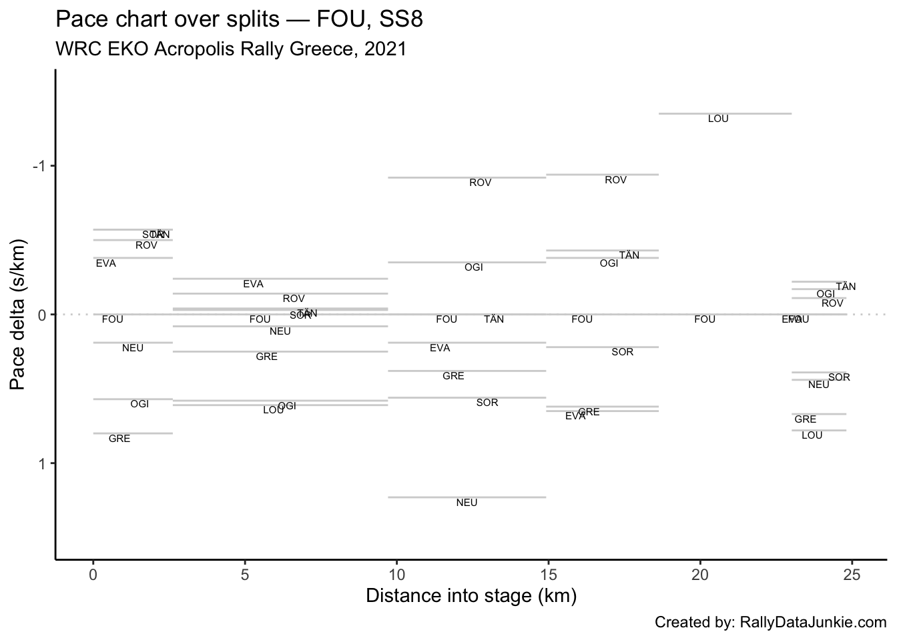
8.12 Driver Report, SS8 - LOU
LOU took seventeenth on stage, with a time of 1292.1s, just 0.8s off NEU.
Stage report for LOU.
| Pos | Car | Code | Time (s) | Gap | Diff |
|---|---|---|---|---|---|
| 1 | 69 | ROV | -56.2 | -56.2 | 0.0 |
| 2 | 8 | TÄN | -48.7 | -48.7 | 7.5 |
| 3 | 1 | OGI | -42.3 | -42.3 | 6.4 |
| 4 | 33 | EVA | -39.0 | -39.0 | 3.3 |
| 5 | 6 | SOR | -38.3 | -38.3 | 0.7 |
| 6 | 44 | GRE | -31.3 | -31.3 | 7.0 |
| 8 | 16 | FOU | -24.6 | -24.6 | 0.7 |
| 10 | 11 | NEU | -23.6 | -23.6 | 0.4 |
| 17 | 7 | LOU | 0.0 | 0.0 | 0.8 |
8.12.1 Rebased Split Times
LOU’s delta at each split compared to other drivers.
| code | split_1 | split_2 | split_3 | split_4 | split_5 | split_N |
|---|---|---|---|---|---|---|
| ROV | -5.3 | -10.6 | -27.3 | -39.7 | -54.6 | -56.2 |
| TÄN | -5.5 | -10.1 | -22.0 | -32.5 | -46.9 | -48.7 |
| OGI | -2.5 | -2.7 | -16.4 | -26.7 | -40.6 | -42.3 |
| EVA | -5.0 | -11.0 | -21.9 | -28.4 | -37.6 | -39.0 |
| SOR | -5.5 | -10.0 | -19.0 | -27.1 | -37.6 | -38.3 |
| GRE | -1.9 | -4.4 | -14.3 | -20.9 | -31.1 | -31.3 |
| FOU | -4.0 | -8.3 | -20.2 | -29.1 | -23.2 | -24.6 |
| NEU | -3.5 | -7.2 | -12.7 | -15.4 | -23.0 | -23.6 |
| LOU | 0.0 | 0.0 | 0.0 | 0.0 | 0.0 | 0.0 |
8.12.2 Off-the-Pace Chart
Accumulated stage time deltas at each split:
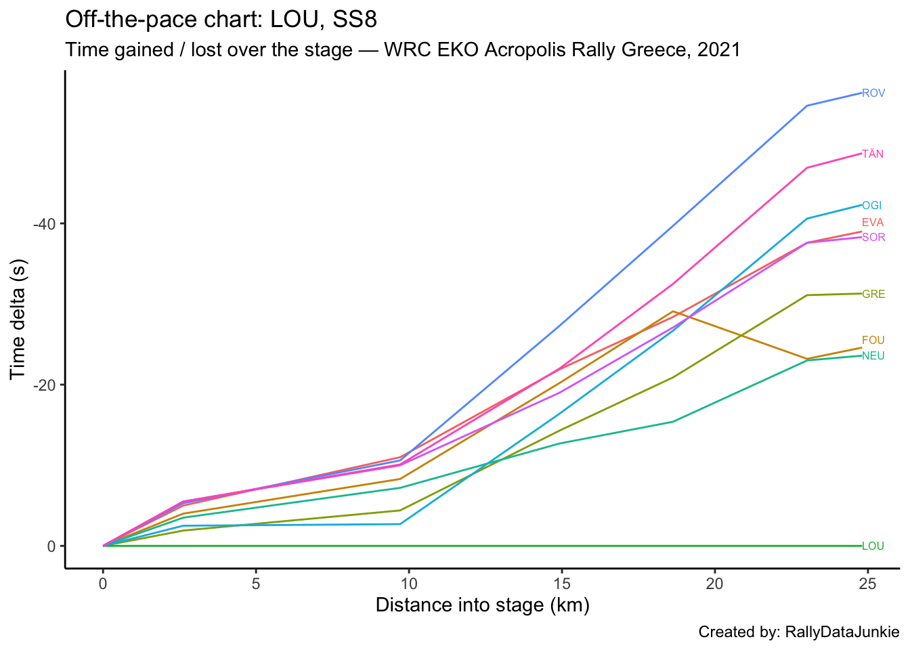
8.12.3 Within-Split Duration Deltas
LOU’s delta in time to complete each split section compared to other drivers:
| code | split_1 | split_2 | split_3 | split_4 | split_5 | split_N |
|---|---|---|---|---|---|---|
| ROV | -5.3 | -5.3 | -16.7 | -12.4 | -14.9 | -1.6 |
| TÄN | -5.5 | -4.6 | -11.9 | -10.5 | -14.4 | -1.8 |
| OGI | -2.5 | -0.2 | -13.7 | -10.3 | -13.9 | -1.7 |
| EVA | -5.0 | -6.0 | -10.9 | -6.5 | -9.2 | -1.4 |
| SOR | -5.5 | -4.5 | -9.0 | -8.1 | -10.5 | -0.7 |
| GRE | -1.9 | -2.5 | -9.9 | -6.6 | -10.2 | -0.2 |
| FOU | -4.0 | -4.3 | -11.9 | -8.9 | 5.9 | -1.4 |
| NEU | -3.5 | -3.7 | -5.5 | -2.7 | -7.6 | -0.6 |
| LOU | 0.0 | 0.0 | 0.0 | 0.0 | 0.0 | 0.0 |
8.12.4 Within-Split Pace Deltas
| code | split_1 | split_2 | split_3 | split_4 | split_5 | split_N |
|---|---|---|---|---|---|---|
| ROV | -2.02 | -0.75 | -3.21 | -3.34 | -3.40 | -0.89 |
| TÄN | -2.10 | -0.65 | -2.28 | -2.83 | -3.29 | -1.00 |
| OGI | -0.95 | -0.03 | -2.63 | -2.78 | -3.17 | -0.94 |
| EVA | -1.91 | -0.85 | -2.09 | -1.75 | -2.10 | -0.78 |
| SOR | -2.10 | -0.63 | -1.73 | -2.18 | -2.40 | -0.39 |
| GRE | -0.73 | -0.35 | -1.90 | -1.78 | -2.33 | -0.11 |
| FOU | -1.53 | -0.61 | -2.28 | -2.40 | 1.35 | -0.78 |
| NEU | -1.34 | -0.52 | -1.06 | -0.73 | -1.74 | -0.33 |
| LOU | 0.00 | 0.00 | 0.00 | 0.00 | 0.00 | 0.00 |
8.12.5 Within-Split Pace Map
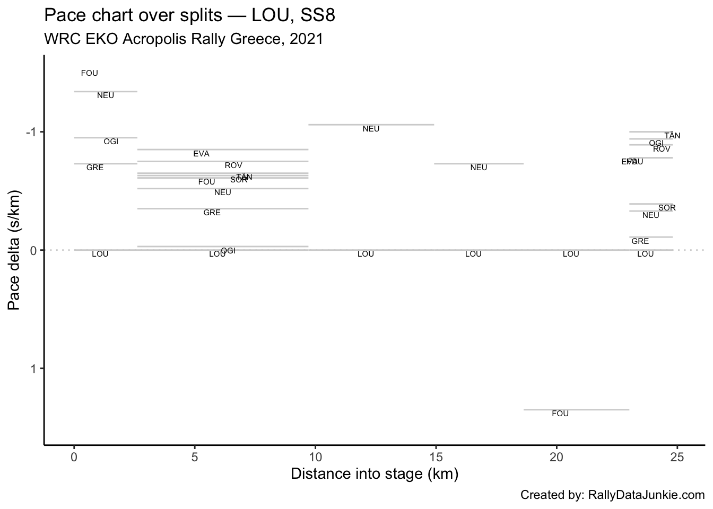